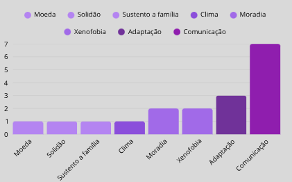
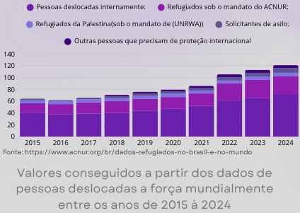
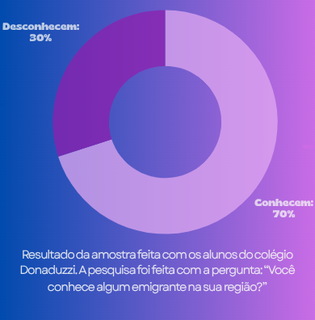

Perguntas Frequentes:
O que posso doar?
Por que doar?
Como doar?
O que farão com os itens doados?
Quais as datas e locais?
Para quem estou doando?
Sobre a campanha:
Essa é uma campanha feita por alunos do Colégio Donaduzzi com o objetivo de arrecadar doações em conjunto com a Embaixada Solidária e com o Biopark. Os itens que podem ser doados são cobertores e agasalhos.
Colaboradores:
Biopark

Embaixada Solidária
Mais informações sobre os imigrantes:
- Até o fim de 2024, 123,2 milhões de pessoas haviam sido forçadas a se deslocar.
- Isso equivale a mais de 1 em cada 67 pessoas em todo o mundo sendo imigrantes.
- O deslocamento forçado quase dobrou na última década.
- 44,3%: dos pedidos de refúgio no Brasil em 2023 foram feitos por crianças e adolescentes, de acordo com o Comitê Nacional para os Refugiados (Conare).
- As principais nacionalidades solicitantes de refúgio no Brasil em 2023 foram venezuelanas, cubanas e angolanas.
Dados estimados:
Dificuldades dos emigrantes ao chegarem no Brasil, de acordo com alunos do Colégio Donaduzzi:
Resultados obtidos através da pergunta feita em amostra para estudantes do Colégio Donaduzzi . A pergunta direcionada aos alunos foi: “Qual é a maior dificuldade que um emigrante pode enfrentar ao chegar em um país com a cultura completamente diferente?
Valores adicionais sobre os emigrantes:
Porcentagem estimada de alunos do Colégio Donaduzzi que conheceram emigrantes:
Em Toledo (PR):
Os imigrantes em Toledo, PR, vêm principalmente da América Latina, com destaque para venezuelanos, paraguaios e haitianos. Segundo dados de 2023 publicados na conta oficial da Prefeitura de Toledo, mais de 1.000 imigrantes trabalham na BRF, e houve um aumento de 433% no número de imigrantes na empresa Prati desde 2019. Toledo, PR, tem se consolidado como um centro de recepção de imigrantes e refugiados, registrando um crescimento significativo nesse público. Muitos deles chegam oriundos da cidade de São Paulo, atraídos pelas oportunidades de trabalho nas indústrias alimentícias da região.
Sobre nosso trabalho:
Essa campanha, que acontecerá entre os estudantes, vai arrecadar itens e os repassar para a Embaixada Solidária (Toledo PR), uma organização que ajuda imigrantes refugiados em Toledo Paraná.